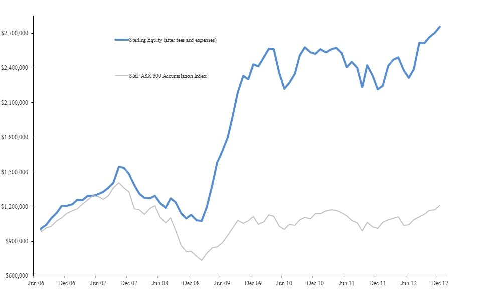

Sterling Equity’s returns since inception are presented in the table below.
|
|
Sterling
Equity |
S&P |
Relative |
| |
|
|
|
| Year to
30 Jun 2007 |
31.0% |
29.2% |
1.8% |
| Year to
30 Jun 2008 |
-5.8% |
-12.7% |
6.9% |
| Year to
30 June
2009 |
36.2% |
-19.3% |
55.5% |
| Year to 30 June
2010 |
32.2% |
13.1% |
19.1% |
| |
|
|
|
| Year to 30 June 2012 | -3.7% |
-7.0% |
3.3% |
| 2
Months to 31 August 2012 |
9.7% |
2.1% |
7.5% |
| |
|
|
|
| Average Performance |
16.9%
pa |
1.7%
pa |
15.1%
pa |
| Cumulative Performance |
162% |
11% |
151% |
The graph below presents Sterling Equity performance, net of fees
and expenses, assuming an initial investment of $1,000,000.

2